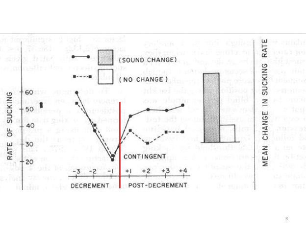
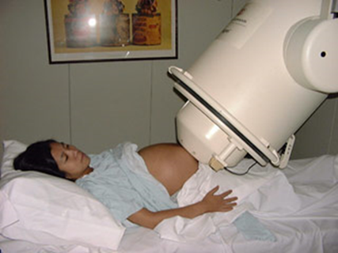

There are several special techniques we can use to study how babies learn language. Many of these techniques are based on the concept of habituation. Complete the activities
below to learn about what habituation is and how we can use it to study child language learning.
In this class you have done several experiments. Depending on what modules you've done, you might have done priming, categorical identification, working memory span,
Stroop, or self-paced reading experiments. There are a lot of different kinds of experiments we can use in psycholinguistics to learn about how language works in the mind.
For every one of those experiments, I gave you some instructions and asked you to do some task.
Do you think it would be possible to do these experiments with babies? What are some challenges you think might arise if we try to do experiments with babies?
A big challenge with babies is that they don't know much language. Therefore, they probably can't understand the instructions you give them. Maybe I can tell a baby "ok, I am going to play some pairs of
sounds for you, and every time you hear a pair of sounds I want you to tell me if you think they're the same sounds or different sounds". But that will be useless because the baby won't understand what
I'm saying. I can play as many sounds as I want, but the baby will probably just cry, or put things in its mouth, or poop. I won't get much useful results from an experiment like that.
If we want to know if a baby considers two sounds to be different, we can't just ask the baby. We need some trick to figure out what the baby is thinking.
Habituation is a useful way to see if a baby can tell the difference between things. Watch the below video about habituation and then answer the questions below.
What is a baby more interested in: stuff it's seen before, or new stuff?
How do you think this can be useful for language research?
As you can see, habituation is a very useful paradigm for testing if babies can hear the difference between sounds. A habituation experiment follows a few basic steps:
Let a baby listen to similar sounds over and over again until it gets bored.
Play some slightly different sounds.
If the baby gets excited again, that means the baby noticed that these are different sounds (i.e., the baby could hear the difference between the old sounds and the new sounds).
If the baby stays pretty bored, that means the baby didn't realize these sounds are new (i.e., the baby could not hear the difference between the sounds).
Now the issue is: how do we measure how bored a baby is?
There are different ways to do it, and it depends on how old the baby is—older babies do different things than younger babies, and babies of different ages behave in different ways to show how bored
or excited they are. Here are a few common ways to measure how bored or excited a baby is.
Looking time
The video you saw in the previous question demonstrated one way of measuring babies' boredom: looking time. The more interested a baby is in something, the longer they look at it.
But how can this be useful for measuring sounds? Sounds are something we hear, not something we look at!
One thing researchers can do is let sounds come out of a computer screen, and show some kind of fun pattern on the screen, such as the checkerboard pattern shown below. When babies hear the sound, they
will also look at the screen. The more interested they are in the sound, the longer they will look at the screen.
If you're interested, here is a great (and very short) paper describing an experiment using this method to study how babies hear the difference between sounds:
This method only works with older babies; they need to be old enough to control the movement of their head and their eyes. You can see in the above paper that they used this method to test 4- and
6-month-old babies.
Sucking
Babies suck. I don't just mean that figuratively (although I'm obviously not a fan of babies). I also mean it literally: babies like to suck on stuff. Here is a
video; it is gross.
The more excited a baby is, the faster it sucks. The more bored it is, the slower it sucks.

Here, for example, is a picture of results from a high-amplitude sucking experiment. Babies heard the same sound again and again, up until the red line you see in the graph. Then they started hearing a
different sound. In one condition (represented by the dashed line), the "different sound" was just a slightly different version of what they heard before (imagine: the same sound spoken in a slightly
different voice, slightly louder, or something like that). In the other condition (represented by the solid line), the sound was a completely different sound (imagine: changing from pa to
ka, or something like that).
The x-axis on the graphs shows which sound is being heard (the third-to-last sound before the change, second-to-last sound before the change, last sound before the change, first sound after the change,
second sound after the change, etc.), and the y-axis shows how fast the baby is sucking (the higher the line, the faster the sucking). You can see that before the change, the baby's sucking is getting
slower and slower. After the change, the baby's sucking speed increases... but it increases a lot for the totally different sound, and only increases a little bit for the not-very
different sound. This is evidence that the baby can hear the difference between a totally (phonologically) different sound, versus just a slightly altered pronunciation of the same sound.
This method is useful for babies who are too young to do a looking time experiment.
Heart rate
Babies' heartbeat can also be used to measure habituation. The more excited a baby is, the faster its heart beats.
How young do you think is the youngest age a baby can be to use this method?
Trick question! A baby doesn't even need to be a baby yet! We can measure the heartbeat of a fetus that is still inside its parent and hasn't been born yet! This paper is an example:
Minai, U., Gustafson, K., Fiorentino, R., Jongman, A., & Sereno, J. (2017). Fetal rhythm-based language discrimination: a biomagnetometry study. NeuroReport, 28, 561-564.
This is done using magnetometry, which requires very fancy (and expensive) equipment. The photo below shows what it looks like. It looks quite scary, but it's actually totally harmless to the baby and the parent. We put a speaker right near the parent's belly to play sounds for the baby to hear, and the big machine can measure the baby's heart rate. (Of course, it also measures mom's heart reate: her heart is pretty close to the baby, and is much bigger and stronger. We have to use some fancy math techniques to distinguish which signals are the parent's heartbeat and which signals are the baby's heartbeat.)

Amazingly, this kind of research has shown that fetuses growing up inside the body of Japanese-speaking parents can notice the difference between listening to Japanese (which they have been hearing for
several months from their parents' speech--they can hear a little bit even inside the belly, just like if you are underwater in a swimming pool you can sort of hear what people just outside the pool are
saying) and listening to English. In other words: even before you're born, you are already starting to learn language!
Reflection questions
What kinds of situations do you think each of these methods might be useful for, and what kinds of situations might there be problems for these methods? Was there anything about these methods that
surprised you? Anything that did not surprise you?
There's one other useful method for studying whether young children can hear the difference between sounds. It's called the head turn paradigm. It's one of the most famous techniques for
studying child language learning, and it's awesome, so let's take a moment to learn how it works.
The head-turn paradigm is based on the concept of classical conditioning, which you may have heard of before if you ever studied psychology. What it means is that we learn to associate some
stimulus (something we hear, see, smell, etc.) with something that comes along with it. The famous example is Ivan Pavlov's dog: Pavlov rang a bell every time he fed this dog, and eventually the dog
learned that the bell means "food time", and the dog got excited every time it heard the bell. (This works with cats, too. My cat knows that if I get up in the morning, it's time for food. That means
that if I wake up early and want to go to the bathroom, I have to hide in bed for a while, because as soon as I stand up my asshole cat will start meowing for food.) Here's a fun example from the TV
series The Office:
This works with babies, too. We can put them in a room where there is some fun, loud, bright toy hidden behind a window. Sometimes the toy appears and makes the baby excited. And we can even train the baby
to figure out when the toy is going to appear.
Ok, so this probably sounds a little evil. We're manipulating a baby's mind. But it's a very useful way to see if a baby can hear the difference between two sounds. (Plus, messing with babies is fun.) See
this video for an example (starts around 50 s):
What we see here is a baby listening to a bunch of the same sounds (da da da da da), and then suddenly the sound changes to ba. And right after the baby hears ba, it turns its
head to look where the toy will appear. And then the toy appears... after the baby looked! That means that the baby could predict when the toy was going to come. How did
the baby know? Because the baby had been trained (by classical conditioning) to know that every time the sound changes, the toy will appear.
Do you think babies can hear the differences between sounds better than we can, or worse? Let's take a look at another video to see. In this video, starting around 45 seconds, you will hear some sounds
from the Thompson (also called Salish) language, an Amerindian language spoken in some parts of present-day United States and Canada. These sounds are both a little bit like "k", but they're pronounced
in different parts of the mouth. Can you hear the difference between them? Can babies hear the difference between them?
One famous experiment about this (Werker & Tees, 1984) tested English-learning babies of different ages, who had never heard these Thompson sounds before. They found that 80% of 6-8 month-old babies
could hear the difference between these two sounds in Thompson. When they looked at 8-10 month-old babies, though, only 57% could hear the difference. And among 10-12 month-old babies, only 10% could
hear it. And adults were also terrible a hearing the difference.
Of course, this is how language should work. We don't want to notice differences that aren't important in our own language. People might pronounce "k" in several different ways, but in English
there is only one "k". If I hear ten different people say "kick", and their voices are all a little bit different, I should be able to generalize across them and recognize that they were all saying "k".
We wouldn't be able to communicate if I thought all ten of them were saying different words, just because their pronunciations were a tiny bit different. On the other hand, for sounds that really are
different (e.g., "k" vs. "t"), I do need to recognize that "kick" and "tick" are different words with different meanings.
Young babies don't know that yet; they're still figuring out what language they speak. So they are born with the ability to hear the differences between pretty much any sounds. As they get older, they
slowly figure out what differences are important in their language. Janet Werker refers to this process as tuning: just like you tune a guitar or piano by slightly adjusting it to make
sure the sound is right, babies tune their language system by slightly adjusting their decisions about which differences are important or not important, based on the language they are hearing.
An experiment on tone
The experiments I described above were about consonant sounds. I claimed that babies are born with the ability to hear the differences between just about any consonants, and later they refine their system
and "discard" some differences.
You might wonder if tones work the same way? Maybe tones are more difficult, and babies can't immediately hear the difference between them when they are first born? Take a look at this paper, which did a
looking time experiment to test whether Cantonese-learning and Mandarin-learn babies can hear the differences between different tones from a very young age. Can they? (Again, you don't need to read every
word of the paper; you probably don't even need to read any more than the abstract. Just skim it enough to find the answer to this question; don't worry if you can't understand everything.)